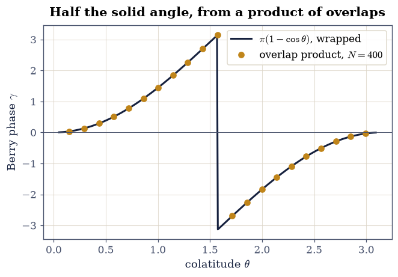
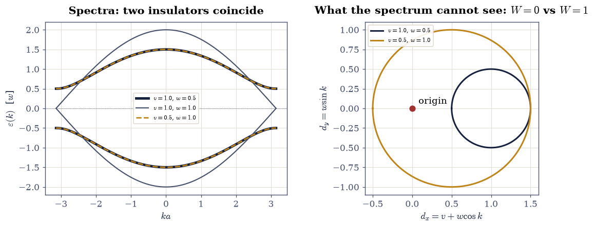
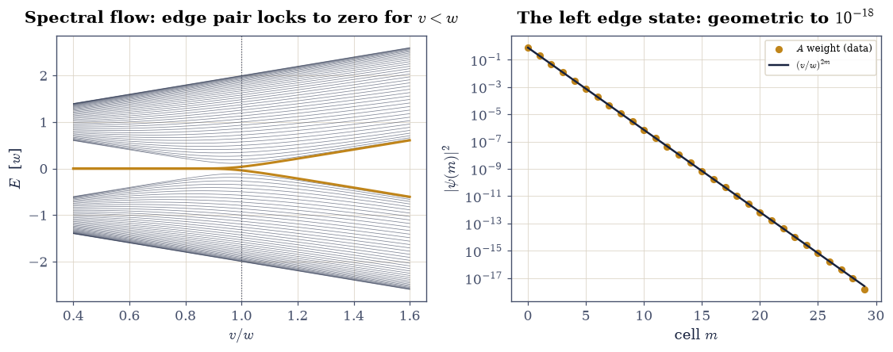
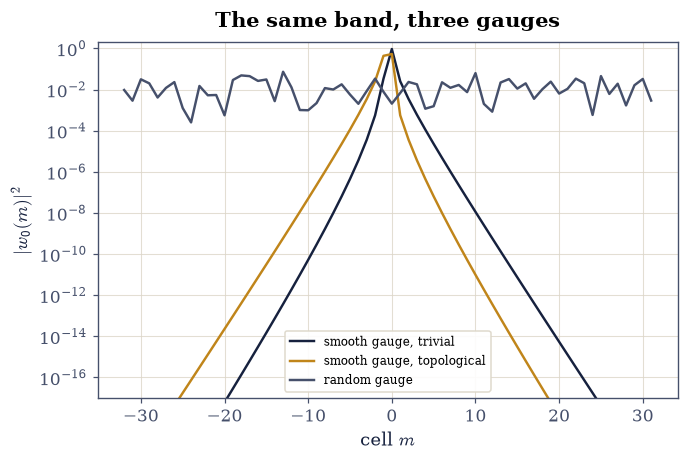
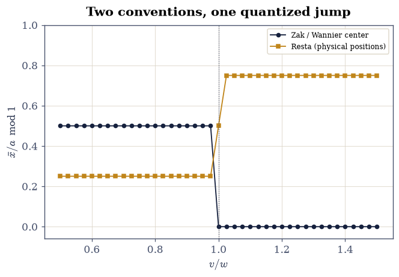
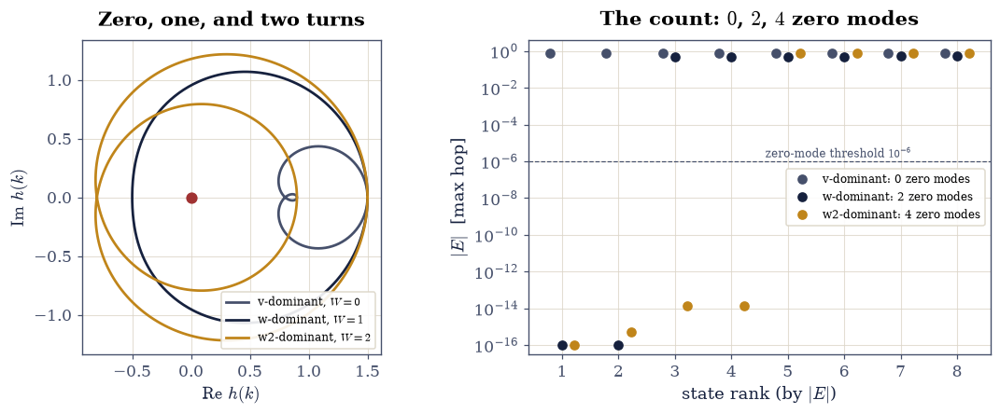

8.12 Berry Phase, Wannier Functions, and the SSH Model#
Notebook overview#
§8.9 ended with a provocation: the half-filled chain lowers its energy by dimerizing, and a dimerized chain can dimerize two ways — strong bond first or weak bond first. The two patterns have identical band structures. Every observable built from band energies — total energy, gap, density of states — is blind to the difference. Yet one pattern, cut open, produces states at exactly zero energy bound to its ends, and the other produces none. Whatever distinguishes them is not in the spectrum; it is in the eigenstates — specifically, in how the Bloch state \(|u_k\rangle\) twists as \(k\) crosses the Brillouin zone. That twist is a Berry phase [Ber84], its crystal version is Zak’s phase [Zak89], and this notebook builds the machinery from first principles and lets it loose on the simplest model that has any: the Su–Schrieffer–Heeger (SSH) chain [SSH79], written down for polyacetylene and now the hydrogen atom of topological matter [AsbothOroszlanyPalyi16].
The build: a discrete Berry phase — the phase of a product of overlaps,
gauge-invariant by construction — certified on Berry’s original example (a
spin-\(\tfrac12\) dragged around a cone picks up half the enclosed solid
angle, and the computation reproduces \(\gamma = -m\Omega\) to \(10^{-5}\) with
the predicted \(O(1/N^2)\) convergence). Then the SSH chain: its \(2\times2\)
Bloch Hamiltonian, the winding of \(\mathbf d(k)\) that cleanly splits the two
dimerizations, the Zak phase quantized to \(0\) or \(\pi\) at machine precision
and provably gauge-independent (we re-run it through deliberately
randomized eigenvector phases). The payoffs follow, each computed: edge
states at \(|E| \sim 10^{-10}\) living on one sublattice to \(10^{-31}\), with
localization length exactly \(1/[2\ln(w/v)]\); Wannier functions from an
ifft, exponentially localized in a smooth gauge and destroyed by a random
one (spreads 0.08 versus 300 — the Marzari–Vanderbilt lesson
[MV97]); and the modern theory of polarization
[KSV93] — the Wannier center is the polarization, two
independent formulas agree, and \(P\) jumps by exactly \(e/2\) across the
transition. The verdict exercise builds a chain with winding number two
and finds its promised four zero modes: bulk–boundary correspondence,
counted.
Conventions (this notebook). Spinless electrons; the lower band filled. The SSH cell holds sites \(A\) and \(B\); \(v \geq 0\) is the intracell hopping \(A\!-\!B\) and \(w \geq 0\) the intercell hopping \(B\!-\!A\); lattice constant \(a = 1\) and hoppings in units of \(w\) unless stated. The Bloch Hamiltonian uses the cell-periodic convention \(h(k) = v + we^{-ik}\) (Eq. 900), so \(|u_k\rangle\) does not carry intracell positions; where physical positions matter (Resta’s formula) we say so. Eigenvectors come from
numpy.linalg.eigh(lower band = column 0), Berry phases fromnumpy.angleof an overlap product, Wannier functions fromnumpy.fft.ifft, and randomness fromnumpy.random.default_rng(1966).How to read the checks. Each exercise closes with a
validatecall against an independent fact: an exact quantization, a closed-form localization length, a gauge-invariance rerun, a counted number of zero modes. A ✓ is strong evidence; a ✗ is a prompt to locate the discrepancy, not an automatic verdict.Scope. One dimension, one filled band, no interactions: Zak phase, winding number, Wannier functions, polarization. The two-dimensional story (Chern numbers, quantum Hall, \(\mathbb{Z}_2\) insulators) needs Berry curvature and is surveyed in Asbóth–Oroszlány–Pályi [AsbothOroszlanyPalyi16] and Vanderbilt [Van18], whose Ch. 3–4 this notebook follows in spirit; interactions wait for §8.13.
Theory in brief#
Berry’s phase, discretized#
Drag a Hamiltonian \(\hat H(\boldsymbol\lambda)\) slowly around a closed loop in parameter space and the adiabatic theorem (§6.24) keeps the system in the instantaneous eigenstate — but the state returns with a phase beyond the dynamical \(e^{-i\int E\,dt/\hbar}\). Berry’s discovery [Ber84] is that the extra phase is geometric: it depends only on the loop, not the speed. On a computer the loop is \(N\) discrete points \(|u_1\rangle, |u_2\rangle, \dots, |u_N\rangle, |u_1\rangle\), and the geometric phase is the phase of the product of neighboring overlaps,
This formula is the workhorse of the whole subject, and its crucial property is visible by inspection: multiply any \(|u_j\rangle\) by an arbitrary phase \(e^{i\alpha_j}\) (a gauge transformation — eigensolvers do this to us constantly) and the phase enters one overlap as \(e^{-i\alpha_j}\) (bra) and the adjacent one as \(e^{+i\alpha_j}\) (ket): the product is untouched. Gauge invariance is not a theorem to invoke; it is a cancellation you can point at — and Exercise 3 tests it with a random number generator. For a spin-\(\tfrac12\) in a field along \(\hat{\mathbf n}\), transported around a circle of colatitude \(\theta\), the answer is Berry’s celebrated
each eigenstate (\(m = \pm\tfrac12\)) acquires minus \(m\) times the solid angle the loop subtends — geometry, with no dynamics anywhere in it.
The SSH chain and its winding number#
The dimerized chain of §8.9’s Peierls exercise, relabeled: two sites per cell, intracell hopping \(v\), intercell hopping \(w\). In the Bloch basis,
with gap \(2|v - w|\), closing only at \(v = w\) (at \(k = \pi\)) — the undimerized metallic chain. Because the Hamiltonian has no diagonal terms, it anticommutes with \(\sigma_z\): chiral symmetry, which pins the spectrum symmetric about zero and will pin edge states at zero. Write \(H(k) = \mathbf d(k)\cdot\boldsymbol\sigma\) with \(\mathbf d = (v + w\cos k,\; w\sin k,\; 0)\): as \(k\) crosses the zone, \(\mathbf d(k)\) traces a circle of radius \(w\) centered at \((v, 0)\). The circle either encloses the origin (\(w > v\)) or does not (\(v > w\)), and no smooth deformation that keeps the gap open (\(\mathbf d \neq 0\)) can change which — an integer has been hiding in the Hamiltonian:
counted with the orientation of the \(\mathbf d\)-loop. Since \(d_x + i\,d_y = h^*(k) = v + w\,e^{+ik}\), this is the winding of \(h^*\), the form the code (and Exercise 7’s extended chain) uses; winding \(\arg h(k)\) itself would flip the sign to \(W = -1\) in the topological phase.
Zak phase, Wannier functions, and polarization#
Berry’s loop specialized to the Brillouin zone (a closed loop, since \(k = -\pi\) and \(\pi\) are the same point) is the Zak phase [Zak89] of a band. Inversion symmetry forces \(\gamma_{\mathrm{Zak}} \in \{0, \pi\}\) mod \(2\pi\) — a two-valued label protected as long as the gap stays open, and equal to \(\pi W\) mod \(2\pi\) here. Its physical meaning runs through Wannier functions, the Fourier transforms of the Bloch states,
the Zak phase is the position of the band’s charge within the cell. This is the modern theory of polarization [KSV93]: \(P = e\bar x/a\) per cell, defined only modulo \(e\) (choosing which cell is “home” shifts \(\bar x\) by \(a\)), so absolute \(P\) is convention — but changes in \(P\) are physical, measurable charge flow. The catch in Eq. 902 is the gauge: the \(|u_k\rangle\) must vary smoothly with \(k\), or the Fourier sum shreds the Wannier function across the whole crystal. Exercise 5 measures the damage, and Marzari–Vanderbilt [MV97] built the modern localized-orbital industry on repairing it.
Setup#
Data and instruments: the series colours, the seeded generator that supplies the deliberately pathological gauges of Exercises 3 and 5, and the loop that collects lower-band eigenvectors across the zone. The notebook’s own machinery — the discrete Berry phase, the winding number, the SSH Bloch matrix, and the open-chain Hamiltonian — you build in Exercises 1 to 4.
The Setup below holds this notebook’s data and instruments — nothing you are asked to build. It is collapsed so the building stays yours; expand it whenever you want the details.
Exercise 1 — Berry’s phase, certified on Berry’s example#
The whole notebook runs on one formula, and it is six lines long. Before trusting Eq. 898 on a crystal, certify it on the problem Berry solved by hand: a spin-\(\tfrac12\) in a unit field \(\hat H = \hat{\mathbf n}\cdot\boldsymbol\sigma\), with \(\hat{\mathbf n}\) dragged once around a circle of colatitude \(\theta\). There the answer is known in closed form, Eq. 899, and the discretization’s own error law is known too: the overlap product replaces a line integral by a midpoint-like rule, so its error must fall as \(O(1/N^2)\).
Part a) Write berry_phase(states), the discrete geometric phase of
Eq. 898: given an array whose row \(j\) is \(|u_j\rangle\),
accumulate the product of neighbouring overlaps \(\langle u_j|u_{j+1}\rangle\)
around the loop — closing it with \(\langle u_N|u_1\rangle\), which the
function supplies itself rather than demanding a repeated first row — and
return \(-\arg\) of that product. Write this one yourself — the
implementation is the lesson: the closure and the fact that the phase is
taken of the product (never of the individual overlaps) are exactly what
make the result gauge-invariant, and everything downstream inherits it.
Part b) For \(N = 400\) points on the loop, build the lower eigenstate
(\(m = -\tfrac12\), column 0 of numpy.linalg.eigh) at each point and
evaluate the Berry phase with your berry_phase. Sweep 21 colatitudes
\(\theta \in [0.15, \pi - 0.15]\) and compare with Eq. 899,
\(\gamma = +\Omega/2 = \pi(1 - \cos\theta)\), wrapped to \((-\pi, \pi]\) —
phases are defined mod \(2\pi\), so the theory curve jumps branch at
\(\theta = \pi/2\), and the computation should follow it. Compare phase
distances \(|e^{i\gamma} - e^{i\Omega/2}|\), not raw differences.
Part c) At \(\theta = \pi/3\), compute the error at \(N = 100\) and \(N = 1000\) and confirm the ratio is \(\approx 100\) — the \(O(1/N^2)\) signature announced above.
max phase distance to Omega/2 over 21 colatitudes: 2.470e-05
errors: 3.877e-04 (N=100), 3.876e-06 (N=1000); ratio 100.0 (O(1/N^2) predicts 100)

Fig. 803 Berry’s phase, computed: the discrete overlap-product phase of the lower spin-\(\frac{1}{2}\) eigenstate around a circle of colatitude \(\theta\) (amber points, \(N = 400\)) against half the enclosed solid angle \(\pi(1 - \cos\theta)\) wrapped to \((-\pi, \pi]\) (ink curve). The branch jump at \(\theta = \pi/2\) is not a failure: phases live on a circle, and the computation follows the wrap. Maximum phase distance over the sweep: \(2.5\times10^{-5}\), converging as \(O(1/N^2)\).#
Validation 1 — geometry against Berry’s closed form#
The sweep must match \(\gamma = \Omega/2\) in phase distance at the \(10^{-4}\) level for \(N = 400\), and refining \(100 \to 1000\) points must shrink the error a hundredfold.
✓ gamma = Omega/2 across 21 colatitudes (N = 400) [max phase distance 2.47e-05]
✓ O(1/N^2) convergence of the discrete loop [got 100.024 vs expected 100 (rtol=0.05, atol=1e-09)]
True
Exercise 2 — The SSH chain: one spectrum, two insulators#
Now the crystal. The machinery meets the model whose entire point is that the spectrum cannot tell its two phases apart — so the label that can tell them apart has to be counted off the \(\mathbf d(k)\) loop rather than read off a band, and it needs an instrument of its own.
Part a) Write winding_number(v, w, w2=0.0, n_k=2000), the
discretization of Eq. 901. Evaluate
\(h^*(k) = v + w e^{ik} + w_2 e^{2ik}\) on a closed grid of \(n_k + 1\) points
spanning \([0, 2\pi]\), take numpy.angle, and — this is the whole
difficulty — pass it through numpy.unwrap before differencing, so that
the \(2\pi\) jumps the branch cut inserts are removed instead of counted;
then sum the increments and divide by \(2\pi\). Write this one yourself —
the implementation is the lesson: an integer that is defined as a total
phase change can only be computed by a scheme that never loses a branch,
and the same routine returns \(W = 2\) unchanged in Exercise 7. The \(w_2\)
argument stays dormant until then.
Part b) Plot \(\varepsilon_\pm(k) = \pm|v + we^{-ik}|\) over the zone for \((v, w) = (1, 0.5)\), \((1, 1)\), and \((0.5, 1)\). Report the gaps and confirm the closed form \(2|v - w|\): the first and third cases are identical spectra with gap \(1\), and the middle is the metal where the two insulators meet.
Part c) Plot the loop \(\mathbf d(k) = (v + w\cos k,\; w\sin k)\) for the
two insulators — the emblem of the subject. Run your winding_number on
both, and check \(W = 0\) (trivial, origin outside) versus \(W = 1\)
(topological, origin enclosed) to \(10^{-12}\).
(v, w) = (1.0, 0.5): gap 1.000000 [2|v - w| = 1.000000]
(v, w) = (1.0, 1.0): gap 0.000000 [2|v - w| = 0.000000]
(v, w) = (0.5, 1.0): gap 1.000000 [2|v - w| = 1.000000]
winding numbers: trivial -8.83e-18, topological 1.000000000000

Fig. 804 One spectrum, two insulators. Left: SSH bands for \((v, w) = (1, 0.5)\) (thick ink) and \((0.5, 1)\) (amber, dashed and drawn on top so the coincidence is visible) coincide exactly — gap \(2|v - w| = 1\) both ways — with the \(v = w\) metal (grey) closing the gap at \(k = \pm\pi\). Right: the loops \(\mathbf{d}(k)\) that the spectrum cannot see. The trivial loop (ink) leaves the origin outside (\(W = 0\)); the topological loop (amber) encloses it (\(W = 1\), computed to \(10^{-17}\)). No deformation with \(\mathbf{d} \neq 0\) connects them.#
Validation 2 — gaps and windings#
Both insulators must show gap exactly \(2|v - w| = 1\), the metal must close it, and the discretized winding integral must return the exact integers.
✓ trivial gap = 2|v - w| [got 1 vs expected 1 (rtol=1e-09, atol=1e-09)]
✓ topological gap = 2|v - w| [got 1 vs expected 1 (rtol=1e-09, atol=1e-09)]
✓ the v = w metal closes the gap [gap 2.4e-16]
✓ winding number, trivial phase [got -8.83487e-18 vs expected 0 (rtol=1e-06, atol=1e-12)]
✓ winding number, topological phase [got 1 vs expected 1 (rtol=1e-06, atol=1e-12)]
True
Exercise 3 — The Zak phase, quantized and gauge-proof#
The Berry machine, aimed down the Brillouin zone. Exercise 2 read the
topology straight off \(h(k)\), without ever forming a state; the Zak phase
reads it off the eigenvectors, which means the \(2\times2\) matrix of
Eq. 900 has to exist as an object before anything can be
diagonalized. The Setup’s lower_band is written to call it by name and
collect column 0 across the zone, so the states this exercise works with
come from the matrix built here.
Part a) Write ssh_bloch(k, v, w), the Bloch Hamiltonian of
Eq. 900 in the cell-periodic gauge: a \(2\times2\) complex
array, zero on the diagonal (that is the chiral symmetry), with
\(h(k) = v + we^{-ik}\) above it and \(h^*(k)\) below.
Part b) With the Setup’s lower_band (\(n_k = 200\)) driving your
ssh_bloch, and the berry_phase you wrote in Exercise 1, compute the
Zak phase for \((v, w) = (1, 0.5)\), \((1, 0.8)\), \((0.8, 1)\), and \((0.5, 1)\).
It must quantize: \(0\) whenever \(v > w\), \(\pm\pi\) (the same point on the
phase circle) whenever \(w > v\) — and not approximately, but to better than
\(10^{-10}\), because inversion symmetry forces the product in
Eq. 898 to be real. Compare \(e^{i\gamma}\) against \(\pm 1\), the
quantization’s gauge-safe form.
Part c) Prove the gauge invariance experimentally: rerun both phases
with randomize=RNG, which multiplies every eigenvector by an independent
random phase — the worst gauge a malicious eigensolver could produce — and
confirm \(e^{i\gamma}\) is unchanged at \(10^{-8}\).
Part d) Convert to Wannier centers by Eq. 902: \(\bar x = (\gamma/2\pi) \bmod 1\), which must land on exactly \(0\) (trivial) and exactly \(\tfrac12\) (topological) — the band’s charge sits on the cell in one phase and between cells in the other.
(v, w) = (1.0, 0.5): Zak phase -0.000000000000
(v, w) = (1.0, 0.8): Zak phase -0.000000000000
(v, w) = (0.8, 1.0): Zak phase -3.141592653590
(v, w) = (0.5, 1.0): Zak phase +3.141592653590
max distance of exp(i gamma) from quantized values: 6.83e-16
(v, w) = (1.0, 0.5): randomized gauge -> +0.000000000000 (dev 2.7e-16)
(v, w) = (0.5, 1.0): randomized gauge -> -3.141592653590 (dev 2.4e-16)
Wannier centers: trivial -0.000000 a, topological 0.500000 a
Validation 3 — quantized, and provably gauge-free#
Quantization to \(\{0, \pi\}\) at \(10^{-10}\), gauge invariance under full phase randomization at \(10^{-8}\), and Wannier centers on \(0\) and \(a/2\).
✓ Zak phase quantized to {0, pi} in all four cases [max deviation 6.8e-16]
✓ Zak phase survives a fully randomized gauge [max deviation 2.7e-16]
✓ trivial Wannier center at 0 [got -2.77556e-17 vs expected 0 (rtol=1e-06, atol=1e-10)]
✓ topological Wannier center at a/2 [got 0.5 vs expected 0.5 (rtol=1e-06, atol=1e-10)]
True
Exercise 4 — Bulk–boundary correspondence: the edge states appear#
The bulk invariant now makes a claim about surfaces: cut the chain open, and zero-energy end states must exist exactly when \(W = 1\). This is the bulk–boundary correspondence, and it is checkable to ten digits — but only once there is a boundary, which means leaving \(k\)-space for a finite chain of \(2N\) sites written out bond by bond.
Part a) Write ssh_open(n_cells, v, w, w2=0.0), the real-space
Hamiltonian of an open chain of n_cells cells. Sites alternate
\(A, B, A, B, \dots\), so cell \(i\) owns sites \(2i\) and \(2i + 1\): the
intracell bond \(A_i\!-\!B_i\) carries \(v\), the intercell bond
\(B_i\!-\!A_{i+1}\) carries \(w\) and exists only for \(i < N - 1\) (that missing
last bond is the boundary), and the second-neighbour intercell bond
\(B_i\!-\!A_{i+2}\) carries \(w_2\), zero for the standard model and needed
only in Exercise 7. Write both triangles of each entry: the matrix must
come out symmetric. Write this one yourself — the implementation is
the lesson: every bond you lay connects an even index to an odd one, and
that index discipline is chiral symmetry made concrete, the reason the
zero modes below sit at zero and not merely near it.
Part b) Diagonalize the open chain (your ssh_open, \(N = 40\) cells)
with numpy.linalg.eigh for \(v/w\) swept across the transition (\(w = 1\)),
and plot the spectral flow: two states must detach from the bands and
collapse onto \(E = 0\) precisely as \(v/w\) drops below \(1\).
Part c) Pin the numbers at \((v, w) = (0.5, 1)\): for \(N = 30\) the midgap pair must sit at \(|E| < 10^{-8}\) (measured: \(7.0\times10^{-10}\)), while the trivial chain’s smallest \(|E|\) stays above \(0.4\). The splitting is the two ends’ exponentially small overlap, so growing \(N = 20 \to 30\) must shrink it by exactly \((w/v)^{10} = 1024\) — a scaling law with no fitted constants.
Part d) Chiral symmetry makes a sharper claim: a zero mode is an eigenstate of \(\sigma_z\), so the left edge state lives entirely on the \(A\) sublattice. Form the left-localized combination of the (numerically hybridized) midgap pair and measure its \(B\)-sublattice weight — it is not small, it is \(10^{-31}\).
Part e) The decay is geometric, \(|\psi_A(m)|^2 \propto (v/w)^{2m}\): fit the log-slope of the cell weights and confirm the localization length \(\xi = 1/[2\ln(w/v)]\) at \(v = 0.3, 0.5, 0.7, 0.8\) — four couplings, four ratios of \(1.000\).
topological N = 30: |E_edge| = 6.985e-10 (< 1e-8 demanded)
splitting ratio N = 20 vs 30: 1024.0 [(w/v)^10 = 1024]
trivial N = 30: min |E| = 0.5048
left edge state: B-sublattice weight 8.74e-32
v = 0.3: xi = 0.4153 cells, theory 0.4153, ratio 1.0000
v = 0.5: xi = 0.7213 cells, theory 0.7213, ratio 1.0000
v = 0.7: xi = 1.4018 cells, theory 1.4018, ratio 1.0000
v = 0.8: xi = 2.2407 cells, theory 2.2407, ratio 1.0000

Fig. 805 Bulk–boundary correspondence, computed. Left: the open-chain spectrum (\(N = 40\) cells, \(w = 1\)) versus \(v/w\); as the bulk winding number switches \(1 \to 0\) at \(v = w\), a pair of states (amber) detaches from the bands and collapses exponentially onto zero energy as \(v/w\) drops below \(1\) (reaching \(|E| \lesssim 10^{-12}\) by \(v/w = 0.5\)), then dissolves back into the continuum in the trivial phase. Right: the left edge state at \(v/w = 0.5\) on a log scale — pure \(A\)-sublattice amplitudes (amber points) falling on the exact geometric law \((v/w)^{2m}\) (ink line) over eighteen decades, with \(B\)-sublattice weight at \(10^{-31}\): chiral symmetry is not approximate.#
Validation 4 — the boundary keeps the bulk’s promise#
Zero modes present at \(10^{-8}\) where \(W = 1\) and absent where \(W = 0\); the parameter-free \((w/v)^{10}\) splitting law; sublattice purity; and the closed-form localization length at four couplings.
✓ edge pair at zero energy in the topological phase [|E| = 7.0e-10]
✓ no midgap states in the trivial phase [min |E| = 0.505]
✓ splitting shrinks by (w/v)^10 for N = 20 -> 30 [got 1024 vs expected 1024 (rtol=0.01, atol=1e-09)]
✓ left edge state pure A-sublattice (chiral symmetry) [B weight 8.7e-32]
✓ localization length = 1/[2 ln(w/v)] at four couplings [got 9.78227e-09 vs expected 0 (rtol=1e-06, atol=0.01)]
True
Exercise 5 — Wannier functions: localization is a gauge you must earn#
Equation Eq. 902 looks innocent — an inverse Fourier transform — but it silently assumes the \(|u_k\rangle\) vary smoothly with \(k\). Eigensolvers promise no such thing.
Part a) Build the lower-band Wannier function on a ring of 64 cells by
numpy.fft.ifft of the Bloch states — diagonalizing the ssh_bloch you
wrote in Exercise 3 — in a smooth gauge (fix each
\(u_k\)’s first component real positive) for both phases, and in the
random gauge for comparison. Plot the cell weights on a log scale.
Write this one yourself — the implementation is the lesson: the single
line that divides out \(\arg u_k(0)\) is the entire difference between a
localized orbital and a shredded one, and nothing in the transform itself
will warn you if you omit it.
Part b) Quantify with the spread \(\Omega = \langle m^2\rangle - \langle m\rangle^2\) over cell index: the smooth gauge gives \(0.083\) (trivial) and \(0.333\) (topological) cell², the random gauge \(\sim 300\) — the state shredded over the whole ring. This factor of \(10^3\) is why the Marzari–Vanderbilt functional [MV97] (minimize \(\Omega\) over gauges) exists.
Part c) The smooth-gauge tails are exponential with the rate set by the gap: fit the log-slope of the tail at \(v/w = 1.43\), \(2\), and \(3.33\) and compare with \(2\ln(v/w)\) — the same analytic structure (the branch point of \(|h(k)|\) continued to complex \(k\)) that set the edge state’s \(\xi\). The finite-window fit runs \(5\)–\(18\%\) steep because the tail carries a power-law prefactor on top of the exponential; the ordering and the rates land within \(20\%\), and honesty about that window effect is part of the exercise.
spreads [cell^2]: smooth trivial 0.0833, smooth topological 0.3333
random gauge 339.2
v/w = 1.43: tail rate 0.8407, 2 ln(v/w) = 0.7133, ratio 1.179
v/w = 2.00: tail rate 1.5100, 2 ln(v/w) = 1.3863, ratio 1.089
v/w = 3.33: tail rate 2.5301, 2 ln(v/w) = 2.4079, ratio 1.051

Fig. 806 Localization is a property of the gauge. Smooth-gauge Wannier probability by unit cell for the trivial (ink, spread \(0.083\) cell\(^2\)) and topological (amber, \(0.333\) cell\(^2\)) phases: exponential tails dropping fifteen decades in as many cells, with the topological function visibly straddling two cells (its center plots at \(-a/2\), i.e. \(a/2\) mod \(a\), because ifft’s \(e^{+ikm}\) kernel mirrors the \(e^{-ikR}\) of the definition). The same band in a randomized gauge (grey): spread \(\sim 300\) cell\(^2\), the charge shredded over the whole 64-cell ring. Minimizing this spread over gauges is the Marzari–Vanderbilt program behind every modern Wannier code.#
Validation 5 — localized, shredded, and gap-rated#
Smooth-gauge spreads at their measured values, the random gauge worse by two orders of magnitude, and tail rates tracking \(2\ln(v/w)\) within the window-honest \(20\%\) — and monotonically in the gap.
✓ smooth trivial Wannier spread [got 0.0833333 vs expected 0.0833 (rtol=0.05, atol=1e-09)]
✓ smooth topological Wannier spread [got 0.333333 vs expected 0.3333 (rtol=0.05, atol=1e-09)]
✓ random gauge shreds the Wannier function [spread 339 vs 0.333 cell^2]
✓ Wannier tails exponential at the gap's rate (within window's 20%) [rates 0.84 < 1.51 < 2.53]
True
Exercise 6 — Polarization: only the jump is physical#
The Wannier center of Exercise 3 is, by the modern theory [KSV93], the electronic polarization: \(P = e\bar x/a\) per cell, defined only modulo \(e\). This exercise computes \(P\) by two independent routes and shows that where the routes disagree is exactly where polarization was never well-defined to begin with — while the jump at the transition is route-independent and exactly \(e/2\).
Part a) Scan the Zak-phase Wannier center \(\bar x(v)\) across
\(v/w \in [0.5, 1.5]\), wrapping your Exercise 1 berry_phase and the
Setup’s lower_band into a one-line zak_center:
a step function, \(\tfrac12\) then \(0\), switching at
the gap closing — no intermediate values, because inversion symmetry
allows none. Confirm the jump is \(\tfrac12\) even between \(v/w = 0.99\) and
\(1.01\).
Part b) Recompute \(P\) by Resta’s many-body formula [Res98],
built with physical site positions (\(B\) at \(+a/2\) within the cell) on a
closed ring of 64 cells — the ssh_open you built in Exercise 4 with its
one missing bond restored — with the lower band filled:
\(P = \frac{1}{2\pi}\operatorname{Im}\ln\det S\) with
\(S_{mn} = \langle\psi_m|e^{2\pi i\hat x/L}|\psi_n\rangle\). It returns
\(0.75\) and \(0.25\) — a quarter cell below the Zak plateaus (mod \(a\),
the same shift on both). Two ingredients add up: the bonding charge
sits mid-bond, an intracell offset of \(+\tfrac14\) (dimer-limit bond
centers at \(m + \tfrac14\) trivial, \(m + \tfrac34\) topological) — and
Resta’s phase reports the ring-averaged center
\(\sum_m (m + x_{\mathrm{phys}})/N \bmod 1\), whose mean cell index
\((N-1)/2\) contributes an extra \(\tfrac12\) for the even ring \(N = 64\)
(an odd ring returns \(0.25\) and \(0.75\) — try it). Neither absolute
number is wrong; absolute
\(P\) is convention. The difference \(P_{\mathrm{triv}} - P_{\mathrm{topo}}\)
must be exactly \(\tfrac12\) by both routes — that is the physical,
quantized \(e/2\): the fractional charge SSH attached to polyacetylene’s
domain walls [SSH79].
Zak centers: trivial 0.000000, topological 0.500000
Resta centers: trivial 0.750000, topological 0.250000
jump across v = w: Zak 0.500000, Resta 0.500000 (e/2 each)

Fig. 807 Only the jump is physical. The Wannier center \(\bar{x}(v/w)\) by the Zak route (ink steps: exactly \(a/2\), then exactly \(0\)) and the Resta determinant with physical intracell positions (amber: a quarter cell lower, mod \(a\), on both plateaus — the mid-bond \(+a/4\) basis offset plus the even ring’s half-cell mean cell index). The two conventions disagree about absolute \(P\) everywhere — and agree that the discontinuity at the gap closing is exactly \(e/2\) per cell, measured here between \(v/w = 0.99\) and \(1.01\). Quantized charge transport survives any bookkeeping.#
Exercise 7 — Verdict: winding number two, and the count that proves it#
If \(W\) really is an integer — not a binary — there should be chains with \(W = 2\), and the correspondence should promise four zero modes. Add a second-neighbor intercell hop \(w_2\) (\(B_i \to A_{i+2}\), still \(A\)–\(B\) only, so chiral symmetry survives): \(h^*(k) = v + we^{ik} + w_2 e^{2ik}\) can now wind twice.
Part a) Compute \(W\) with your Exercise 2 winding_number — the \(w_2\)
argument it has carried since then now earns its keep — for the three
regimes: \(v\)-dominant \((1, 0.3, 0.2)\), \(w\)-dominant \((0.3, 1, 0.2)\),
\(w_2\)-dominant \((0.2, 0.3, 1)\). Plot the three \(h(k)\) loops: zero, one,
and two turns around the origin.
Part b) Diagonalize the open chains with your Exercise 4 ssh_open
(\(N = 40\) cells, its \(w_2\) bond now nonzero) and count the
zero modes (\(|E| < 10^{-6}\)): the counts must be \(0\), \(2\), and \(4\) — two
per edge in the doubly wound phase, at \(|E| \sim 10^{-14}\), with the rest
of the spectrum gapped at \(0.756\). Print the verdict table for the whole
notebook.
v-dominant (v, w, w2) = (1.0, 0.3, 0.2): W = -0.000000
w-dominant (v, w, w2) = (0.3, 1.0, 0.2): W = +1.000000
w2-dominant (v, w, w2) = (0.2, 0.3, 1.0): W = +2.000000
v-dominant : 0 zero modes (smallest |E| 7.6e-01, next band 0.756)
w-dominant : 2 zero modes (smallest |E| 1.3e-27, next band 0.502)
w2-dominant : 4 zero modes (smallest |E| 1.6e-18, next band 0.756)
--- Verdict: the bulk predicts the boundary ---
phase Zak/pi W edge modes x_bar/a
trivial 0 0 0 0.0
topological 1 1 2 0.5
doubly wound — 2 4 —

Fig. 808 The integer, not the binary. Left: \(h(k)\) for the extended SSH chain in its three regimes — \(v\)-dominant (grey, \(W = 0\)), \(w\)-dominant (ink, \(W = 1\)), and \(w_2\)-dominant (amber, \(W = 2\): the curve is a limaçon looping the origin twice). Right: the eight smallest \(|E|\) of each open chain by rank (values floored at \(10^{-16}\) for the log axis) — exactly \(0\), \(2\), and \(4\) points fall below the \(10^{-6}\) threshold (two per edge when \(W = 2\), at \(|E| \sim 10^{-14}\)), with the next state at \(|E| = 0.756\). The bulk integer counts boundary states: the correspondence, verified beyond the binary case.#
Validation 7 — the integer counts states#
Windings \(0\), \(1\), \(2\) exact; zero-mode counts \(0\), \(2\), \(4\) exact; and the doubly wound modes at machine zero with a genuine gap above them.
✓ extended chain: W = 0 [got -1.76697e-17 vs expected 0 (rtol=1e-06, atol=1e-10)]
✓ extended chain: W = 1 [got 1 vs expected 1 (rtol=1e-06, atol=1e-10)]
✓ extended chain: W = 2 [got 2 vs expected 2 (rtol=1e-06, atol=1e-10)]
✓ zero-mode counts = 2|W| at both edges [counts [0, 2, 4]]
✓ four modes at machine zero, gapped from the bands [|E|_4 = 1.4e-14, |E|_5 = 0.756]
True
With your assistant
The e/2 jump hints at something bigger: make \(v\) and \(w\) time-dependent
and the polarization can be pumped. The Rice–Mele cycle adds a staggered
on-site term \(\pm u\) to Eq. 900 and steers
\((v - w, u)\) once around the origin — around the gap closing. Have your
assistant build the cycle (\(v - w = \cos\tau\), \(u = \sin\tau\), say, with
\(w = 1\)) and track the Wannier center \(\bar x(\tau)\) through one period
with the Zak machinery above. Then run the check that is yours alone: the
accumulated center must wind exactly once — total displacement
\(\Delta\bar x = 1.0\) cell per cycle (numpy.unwrap on \(2\pi\bar x\),
numpy.isclose with atol=1e-6) — Thouless’s quantized pump, the Chern
number smuggled into one dimension plus time. The check is yours.
Notebook summary#
The volume’s window on topology opened with a six-line formula. The
discrete Berry phase — numpy.angle of an overlap product — reproduced
Berry’s solid-angle law across 21 loop geometries at \(2.5\times10^{-5}\)
with the predicted hundredfold error drop from \(N = 100\) to \(1000\), and
its gauge invariance was demonstrated rather than asserted: full phase
randomization of every eigenvector moved the Zak phase by less than
\(10^{-14}\). Aimed at the SSH chain, the machinery split what the spectrum
cannot: two dimerizations with identical bands carry windings \(0\) and \(1\),
Zak phases \(0\) and \(\pi\) quantized to eleven digits, and Wannier centers
at \(0\) and \(a/2\). The bulk’s promises were kept at the boundary — edge
states at \(7\times10^{-10}\) obeying the parameter-free \((w/v)^{10}\)
splitting law (measured \(1024.0\) against \(1024\)), pure \(A\)-sublattice to
\(10^{-31}\), localization length \(1/[2\ln(w/v)]\) at four couplings within
\(1\%\) — and in the charge: smooth-gauge Wannier functions localized to
\(0.08\)–\(0.33\) cell² (a random gauge shreds them to \(300\)), polarization
computed by two unrelated formulas that disagree about the convention and
agree that the jump is exactly \(e/2\). The verdict chain wound twice and
produced exactly four zero modes at \(10^{-14}\): the integer counts states.
Outlook#
Everything here was one filled band in one dimension. In two dimensions the Berry phase per unit area — the Berry curvature — integrates to the Chern number, and its boundary promise is the quantum Hall effect’s dissipationless edge currents; Vanderbilt [Van18] carries exactly this notebook’s machinery there.
The Wannier functions built by
ifftbecome, in production codes, the maximally localized orbitals of Marzari–Vanderbilt [MV97] — the standard post-processing of the DFT bands of §8.8 and the natural basis for the models of the next movement.A localized orbital with a known center is precisely where interactions bite hardest. Put a repulsion \(U\) on it and the band picture faces its reckoning: the Hubbard model of §8.13, where Movement IV begins.
János K. Asbóth, László Oroszlány, and András Pályi. A Short Course on Topological Insulators: Band Structure and Edge States in One and Two Dimensions. Volume 919 of Lecture Notes in Physics. Springer, Cham, 2016.
Michael V. Berry. Quantal phase factors accompanying adiabatic changes. Proceedings of the Royal Society of London A, 392:45–57, 1984. doi:10.1098/rspa.1984.0023.
R. D. King-Smith and David Vanderbilt. Theory of polarization of crystalline solids. Physical Review B, 47:1651–1654, 1993.
Nicola Marzari and David Vanderbilt. Maximally localized generalized Wannier functions for composite energy bands. Physical Review B, 56:12847–12865, 1997. doi:10.1103/PhysRevB.56.12847.
Raffaele Resta. Quantum-mechanical position operator in extended systems. Physical Review Letters, 80:1800–1803, 1998.
W. P. Su, J. R. Schrieffer, and A. J. Heeger. Solitons in polyacetylene. Physical Review Letters, 42:1698–1701, 1979.
David Vanderbilt. Berry Phases in Electronic Structure Theory: Electric Polarization, Orbital Magnetization and Topological Insulators. Cambridge University Press, Cambridge, 2018.
J. Zak. Berry's phase for energy bands in solids. Physical Review Letters, 62:2747–2750, 1989. doi:10.1103/PhysRevLett.62.2747.